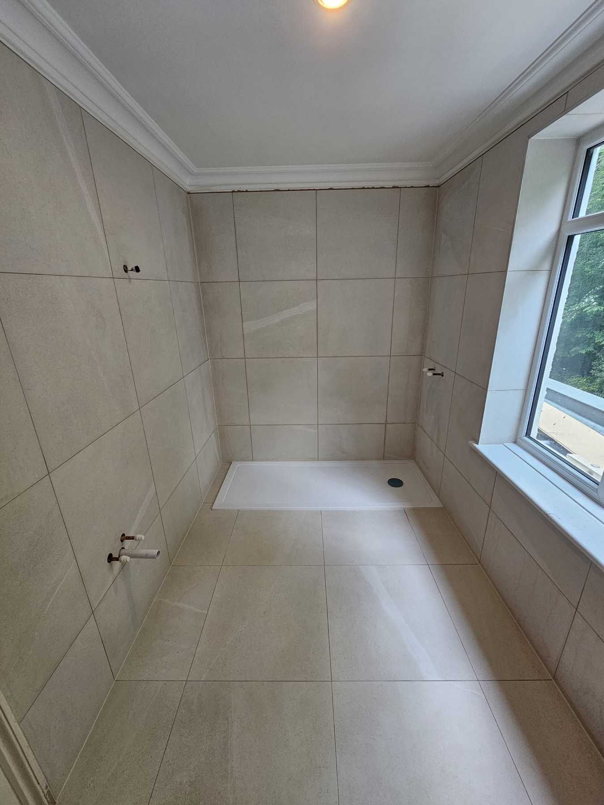
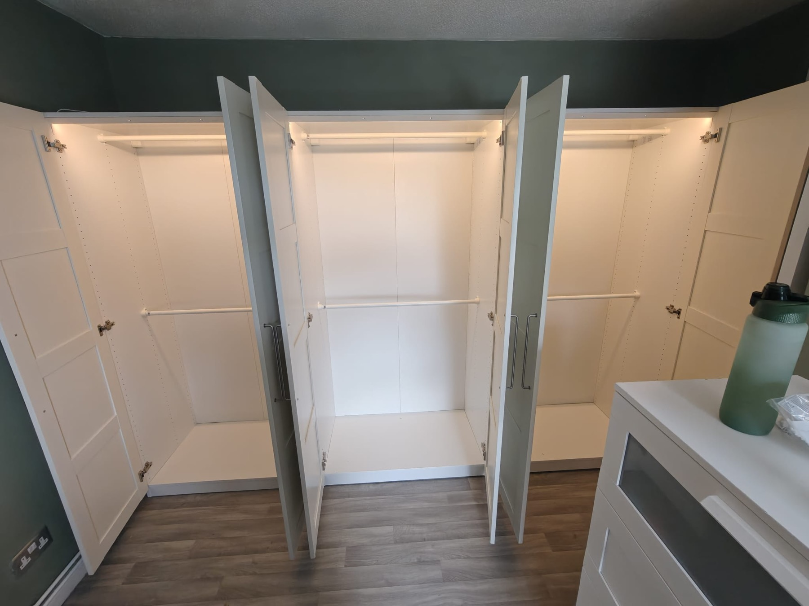
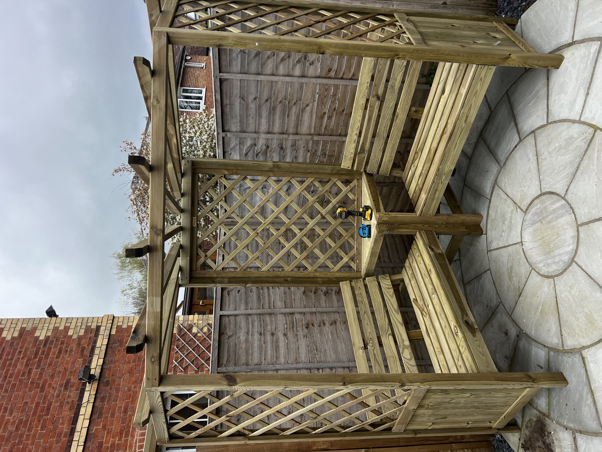

What areas does Samson Handyman cover?
Reading, Twyford, Caversham, Tilehurst, Woodley, Earley, Wargrave, Sonning, Wokingham, Bracknell, Maidenhead and nearby Berkshire areas.
Local handyman service since 2016
Home repairs, painting, tiling, flooring, minor plumbing repairs, furniture assembly and wall mounting with clear quotes, careful preparation and tidy workmanship.
Clear quote firstNo hidden costs before agreed work starts.
Local coverageReading, Twyford, Caversham, Maidenhead, Bracknell and nearby areas.
Photo-friendly quotesSend job photos by WhatsApp for a faster estimate.
What Samson does
Samson Handyman helps homeowners, landlords and local businesses get practical jobs finished properly without chasing several trades for smaller work. The focus is simple: clear communication, careful preparation and a clean finish.
For specialist or regulated work, the job is assessed first so you know whether a dedicated qualified trade specialist is required.
Services
Interior and exterior painting, wallpaper hanging and removal, sanding, filling, priming, woodwork painting, feature walls, touch-ups and full room refreshes. Every job is prepared carefully for a clean, lasting finish, whether it is a small touch-up or a full room transformation.
Kitchen splashbacks, bathrooms, floors and walls. We handle clean cuts, level finishes, regrouting, repairs and smaller tile replacement work where the existing layout needs tidying up and the whole area needs a cleaner finish.
Laminate, vinyl, click flooring and carpet installation, plus board replacements and work on uneven or damaged areas so the room feels properly finished from edge to edge.
Taps, leaks, toilets, sinks, seals and small bathroom or kitchen plumbing tasks. Useful for fixes that need a quick, tidy response without a full plumbing refit.
Flat-pack furniture assembled securely and neatly, from beds and wardrobes to storage units, desks and other household pieces that need setting up properly and left ready to use.
TVs, mirrors, shelves, cabinets, curtain poles, blinds and picture hanging, fitted with careful fixing and level placement so the result looks tidy, secure and ready to use straight away.
Doors, frames, skirting, hinges, handles and smaller timber repair work, including adjustments and replacements to improve fit, function and appearance where older joinery needs attention.
Fence panels, posts, gates, decking fixes and general exterior maintenance for outdoor areas that need practical repairs, better function and a tidier overall finish.
Work photos



Business name: Samson Handyman
Phone: 07912 758192
Core area: Reading, Twyford, Caversham, Maidenhead, Bracknell and Berkshire
Published proof: 5.0 public rating from 60 online reviews
Quote style: clear estimate discussion before work starts
Service area
Get a quote
Fill in the form with your email, phone, area and job details. Your request is sent by email so Samson can reply directly, and you can still use WhatsApp if that is easier.
Questions
Reading, Twyford, Caversham, Tilehurst, Woodley, Earley, Wargrave, Sonning, Wokingham, Bracknell, Maidenhead and nearby Berkshire areas.
Home repairs, painting and decorating, tiling, flooring, minor plumbing repairs, furniture assembly, wall mounting, carpentry repairs and outdoor fixes.
Yes. Photos, location and preferred timing make it much easier to check the work and respond with a clear estimate.
No. Quotes are free of charge for most small jobs when they can be estimated from photos, your location and a short description. Larger or unclear jobs may need a visit before confirming the price.